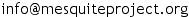

If you previously downloaded either the base system of Mesquite or Cartographer, and intend to download a new version of Cartographer, you should download new versions of all packages to ensure compatibility. Cartographer requires Mesquite 3.2 or later.
Mesquite Cartographer is free software, and may be redistributed and modified under the terms of the GNU Lesser General Public License. Source code is available from the GitHub repository at https://github.com/MesquiteProject/Cartographer. See the Mesquite documentation for obtaining the Mesquite source and for installation procedured for sources of other packages such as Cartographer.
The same license may also apply to specialized packages of modules.
THIS SOFTWARE IS PROVIDED "AS IS" WITHOUT WARRANTY OF ANY KIND. DAVID MADDISON AND WAYNE MADDISON DO NOT WARRANT, GUARANTEE, OR MAKE ANY REPRESENTATIONS REGARDING THE USE OR THE RESULTS OF THE SOFTWARE OR DOCUMENTATION IN TERMS OF THEIR CORRECTNESS, RELIABILITY, CURRENTNESS, OR OTHERWISE. IN NO CASE WILL THESE PARTIES BE LIABLE FOR ANY SPECIAL, INCIDENTAL, CONSEQUENTIAL, OR OTHER DAMAGES THAT MAY RESULT FROM USE OF THIS SOFTWARE
Download Cartographer
These archives contain Cartographer as well as one example data file. Please email us () with questions or comments about downloading and installing Cartographer. Cartographer requires Mesquite 3.2 and higher, and Java 1.6 or higher.
To download the latest version of Cartographer, go to the releases page, and download the latest release. We suggest you download cartographer.zip if you have MacOSX or Windows, and cartographer.tgz version if you have a Linux system. Note that the source code is not what you want unless you know how to turn it into the working program.
To install Cartographer, open up the
downloaded file, find the directory contained therein
called "cartographer",
and move that into the "mesquite" directory of your
installed "Mesquite_Folder"
directory.
If you wish, you could instead move it into other
locations supported by Mesquite.
The Cartographer manual is included in the downloads,
as html pages, and will be installed when you install Cartographer.
It will be available from Mesquite's Help menu.